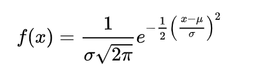

Sesión 1- 07 de Mayo de 2020
Juan David Ospina Arango
Profesor a cargo
Departamento de Ciencias de la Computación y de la Decisión
Universidad Nacional de Colombia
Introducción a las Reglas

Los modelos se establecen a partir de las relaciones. En algún lugar se encuentran las verdaderas relaciones entre las entradas y las salidas. Pero el ideal es que con el conocimiento del dominio, podamos realizar modelos que tengan consistencia entre las entradas y las salidas.
A partir de la imagen anterior, a las entradas se le asignará X como un vector de varias entradas Varias entradas y Y como una sola salida. En la asignatura la respuesta o salida NO es un vector multivariado.
Generalmente X pertenece a los números reales, tal como se observa en la siguiente notación:
X ∈ RP
Siendo P, el número de variables predictoras.
X =[ X(1) ,X(2) ,…, X(P)], X(j) ∈ R
En caso de que sean variables categóricas, la respuesta se representa con variables binarias, como se puede observa a continuación.
Una variable categorica con K categorías se puede representar con K-1 variables indicadoras o variables Dummies.
Si X ∈ RP, Y pertenece a los reales o pertenece a un conjunto de categorías con multiples posibilidades. En la asignatura se hablará de problemas de clasificación, donde Y puede tomar valores binarios de 0 y 1 o de -1 y 1.
Las X y las Y se estudiará en el contexto de variables aleatorias, considerando estas como funciones. Es decir, es una función que asigna un valor numérico al resultado de un experimento aleatorio, cuando los resultados de observación se asocian con el subconjunto de números reales como en el lanzamiento de los dados, la temperatura, los ojos verdes, etc.
Existen variables aleatorias reales y multivariadas.
X es un vector aleatorio si X = [X(1), X(2), X(J)], cada X(i), es una variable aleatoria.
La Función de Distribución de Probabilidad es la forma de calcular las probabilidades (P) de ocurrencia de algunos eventos. |
Si X es una variable aleatoria, existe una función que se llama función de distribución de Probabilidad, que permite calcular:
P(X < x) = Fx (X)
Si se conoce la distribución de X conoce todo de X y se pueden tener predicciones de X.
Si X es un vector aleatorio que también tiene una Función de Distribución de Probabilidad:
P ( X1 < Xi , X2 < Xi) = FX (X)
Las distribuciones de probabilidad conjuntas se denota asi: P ( X1 < Xi , X2 < Xi) = FX (X), se puede decir que es la función de distribución conjunta de X1 , X2. Es decir, una distribución multivariada es una distribución conjunta.
Si X es un vector aleatorio y todos sus componentes son números reales, existe una función, la función de Densidad de Probabilidad que describe la probabilidad relativa en tomar un valor, denotada de la siguiente forma:
Un ejemplo de una función de densidad es la distribución normal conocida por ser un tipo de distribución de probabilidad continua para un valor real, la notación es:

Otro ejemplo es la distribución normal multivariada que es una generalización de la distribución normal a dimensiones superiores, a menudo se usa para describir aproximadamente cualquier conjunto de variables aleatorias correlacionadas de valor real.
El vector aleatorio X es normal p-dimensional con vector de medias µ y matriz de covarianzas Σ (notación: X ≡ Np(µ, Σ)) si tiene densidad dada por:
A partir de lo anterior se puede mostrar que E X =µ, siendo E la esperanza. Y D(X) = Σ, siendo D la dispersión.
En la asignatura se trabajará con modelos que tienen una estructura matemática que relacionan las entradas con la salida. En las entradas se está haciendo alusión a un vector multivariado.
Cuando nos enfocamos en una sola variable podemos extraer: 1) las medidas de tendencia central como la media aritmética, la mediana, la moda y el rango; 2) y las medidas de dispersión como el rango (dispersión entre valores extremos de una variable R = x(n) - x(1) ), la desviación media (mide el grado de dispersión de los datos con respecto a la media. Se denota como la raíz cuadrada de la varianza), la varianza (Es otro parámetro para medir la dispersión de los valores de una variable respecto a la media. Corresponde a la media aritmética de los cuadrados de las desviaciones respecto a la media), coeficiente de variación (identifica con mayor claridad la dispersión de los datos), el Rango Intercuartil (es la estimación de la dispersión de una distribución de los datos, consiste en la diferencia entre el tercer y el primer cuartil) y el coeficiente de variación (mide la variabilidad de los datos con respecto a la media).
A partir de la Función de Densidad se puede definir la esperanza de X asi:

Para describir los datos se necesita las medidas de tendencia central especialmente la media o vector de medias y en la medida de dispersión se usará la matriz de covarianzas. La matriz de covarianzas se puede normalizar para tener la matriz de correlaciones.
Medidas de tendencia central y de Dispersión en R Introducción a la matriz de covarianzas - Práctica en R.
Análisis del conjunto cars
Se explora la relación entre velocidad y distancia para frenar totalmente:
#Descripción: Cars es el dataframe, es un conjunto de datos adaptado. Aqui se realiza un gráfico de Velocidad (X) y distancia (Y).Compartimos la utilidad de las etiquetas main (titulo), las (dirercción de las etiquetas), points (Graficar un punto particular, en este caso la media)
plot(cars$speed,cars$dist,xlab="Velocidad [mph]",ylab="Distancia frenado [ft]",
main="Velocidad vs Distancia de frenado (1920)",las=1)
points(mean(cars$speed),mean(cars$dist),col="red",lwd=3)
grid()
rad1 = 2
rad2 = 20
xcenter = mean(cars$speed)
ycenter = mean(cars$dist)
theta <- seq(0, 2 * pi, length = 200)
polygon(x=rad1 * cos(theta) + xcenter,
y=rad2 * sin(theta) + ycenter,
lwd=3)Encontremos la matriz de dispersión:
(S<-cov(cars))## speed dist
## speed 27.95918 109.9469
## dist 109.94694 664.0608# La matriz de dispersión muestra en la diagonal la varianza de cada variable y por fuera de la diagonal se tienen las covarianzas.apply(cars,2,var)## speed dist
## 27.95918 664.06082# Se presenta las varianzas que aparecen en la diagonal. El 2 hace alusión a las columnas.apply(cars,2,mean)## speed dist
## 15.40 42.98Pasemos a más variables:
library(MASS)##
## Attaching package: 'MASS'## The following object is masked from 'package:plotly':
##
## select# Del paquete cargado se selecciona el dataset Cars93 y se seleccionan las variables Min.Price, Price, Max.Price, MPG.city, MPG.highway, EngineSize, Horsepower, RPM, Rev.per.mile.
Cars93_num<-subset(Cars93,select = c("Min.Price", "Price", "Max.Price", "MPG.city", "MPG.highway", "EngineSize", "Horsepower", "RPM", "Rev.per.mile"))# Para identificar los nombres de las columnas de un dataset
names(Cars93_num)## [1] "Min.Price" "Price" "Max.Price" "MPG.city" "MPG.highway"
## [6] "EngineSize" "Horsepower" "RPM" "Rev.per.mile"# Para identificar el tipo de datos de cada columna de un data set.
apply(Cars93_num, 2, class)## Min.Price Price Max.Price MPG.city MPG.highway EngineSize
## "numeric" "numeric" "numeric" "numeric" "numeric" "numeric"
## Horsepower RPM Rev.per.mile
## "numeric" "numeric" "numeric"# Identificar cuantas filas y columnas tiene el data set.
dim(Cars93_num)## [1] 93 9#Grafico de dispersión por pares, que muestra las relaciones multivariadas pero de a dos atributos.
pairs(Cars93_num)Calculamos la matriz de dispersión:
# La covarianza se saca con los atributos numericos, en caso contrario generaría un error.
(S_cars<-cov(Cars93_num))## Min.Price Price Max.Price MPG.city MPG.highway
## Min.Price 76.493022 81.998008 87.477202 -30.614972 -27.04464
## Price 81.998008 93.304579 104.585337 -32.275316 -28.87584
## Max.Price 87.477202 104.585337 121.670977 -33.958298 -30.73252
## MPG.city -30.614972 -32.275316 -33.958298 31.582281 28.28343
## MPG.highway -27.044635 -28.875842 -30.732515 28.283427 28.42730
## EngineSize 5.856385 5.986403 6.121921 -4.139165 -3.46676
## Horsepower 367.574053 398.764727 430.075900 -197.979897 -172.86547
## RPM -222.321178 -28.560659 164.652875 1217.478962 997.33520
## Rev.per.mile -2042.671634 -2044.978086 -2048.416082 1941.631019 1555.24310
## EngineSize Horsepower RPM Rev.per.mile
## Min.Price 5.856385 367.5741 -222.32118 -2042.6716
## Price 5.986403 398.7647 -28.56066 -2044.9781
## Max.Price 6.121921 430.0759 164.65288 -2048.4161
## MPG.city -4.139165 -197.9799 1217.47896 1941.6310
## MPG.highway -3.466760 -172.8655 997.33520 1555.2431
## EngineSize 1.076122 39.7770 -339.16374 -424.4118
## Horsepower 39.776999 2743.0788 1146.63394 -15610.7036
## RPM -339.163745 1146.6339 356088.70968 146589.3233
## Rev.per.mile -424.411816 -15610.7036 146589.32328 246518.7295# Hacer la matriz de correlaciones.
R_cars<-cor(Cars93_num)
R_cars## Min.Price Price Max.Price MPG.city MPG.highway EngineSize
## Min.Price 1.00000000 0.970601402 0.90675608 -0.6228754 -0.5799658 0.6454877
## Price 0.97060140 1.000000000 0.98158027 -0.5945622 -0.5606804 0.5974254
## Max.Price 0.90675608 0.981580272 1.00000000 -0.5478109 -0.5225607 0.5350120
## MPG.city -0.62287544 -0.594562163 -0.54781090 1.0000000 0.9439358 -0.7100032
## MPG.highway -0.57996581 -0.560680362 -0.52256074 0.9439358 1.0000000 -0.6267946
## EngineSize 0.64548767 0.597425392 0.53501197 -0.7100032 -0.6267946 1.0000000
## Horsepower 0.80244412 0.788217578 0.74444475 -0.6726362 -0.6190437 0.7321197
## RPM -0.04259816 -0.004954931 0.02501478 0.3630451 0.3134687 -0.5478978
## Rev.per.mile -0.47039499 -0.426395113 -0.37402421 0.6958570 0.5874968 -0.8240086
## Horsepower RPM Rev.per.mile
## Min.Price 0.80244412 -0.042598158 -0.4703950
## Price 0.78821758 -0.004954931 -0.4263951
## Max.Price 0.74444475 0.025014782 -0.3740242
## MPG.city -0.67263615 0.363045129 0.6958570
## MPG.highway -0.61904368 0.313468728 0.5874968
## EngineSize 0.73211973 -0.547897805 -0.8240086
## Horsepower 1.00000000 0.036688212 -0.6003139
## RPM 0.03668821 1.000000000 0.4947642
## Rev.per.mile -0.60031387 0.494764211 1.0000000image(t(R_cars[9:1,]))Esta es la media de las columnas de las variables numéricas:
media_cars93_num<-colMeans(Cars93_num)Ilustración de la función agregate:
#Identificar el precio por fabricante con la función de agregación, la media.
aggregate(Price~Cylinders*Manufacturer,data=Cars93,FUN=mean)## Cylinders Manufacturer Price
## 1 4 Acura 15.90000
## 2 6 Acura 33.90000
## 3 6 Audi 33.40000
## 4 4 BMW 30.00000
## 5 4 Buick 15.70000
## 6 6 Buick 23.60000
## 7 8 Cadillac 37.40000
## 8 4 Chevrolet 13.56667
## 9 6 Chevrolet 16.00000
## 10 8 Chevrolet 28.40000
## 11 6 Chrylser 18.40000
## 12 4 Chrysler 15.80000
## 13 6 Chrysler 29.50000
## 14 4 Dodge 12.35000
## 15 6 Dodge 22.40000
## 16 4 Eagle 12.20000
## 17 6 Eagle 19.30000
## 18 4 Ford 11.74000
## 19 6 Ford 20.05000
## 20 8 Ford 20.90000
## 21 3 Geo 8.40000
## 22 4 Geo 12.50000
## 23 4 Honda 16.46667
## 24 4 Hyundai 10.47500
## 25 8 Infiniti 47.90000
## 26 6 Lexus 31.60000
## 27 6 Lincoln 34.30000
## 28 8 Lincoln 36.10000
## 29 4 Mazda 12.13333
## 30 6 Mazda 19.10000
## 31 rotary Mazda 32.50000
## 32 4 Mercedes-Benz 31.90000
## 33 6 Mercedes-Benz 61.90000
## 34 4 Mercury 14.10000
## 35 6 Mercury 14.90000
## 36 4 Mitsubishi 10.30000
## 37 6 Mitsubishi 26.10000
## 38 4 Nissan 13.75000
## 39 6 Nissan 20.30000
## 40 4 Oldsmobile 14.90000
## 41 6 Oldsmobile 20.10000
## 42 4 Plymouth 14.40000
## 43 4 Pontiac 10.05000
## 44 6 Pontiac 20.20000
## 45 4 Saab 28.70000
## 46 4 Saturn 11.10000
## 47 3 Subaru 8.40000
## 48 4 Subaru 15.20000
## 49 3 Suzuki 8.60000
## 50 4 Toyota 17.27500
## 51 4 Volkswagen 14.55000
## 52 5 Volkswagen 19.70000
## 53 6 Volkswagen 23.30000
## 54 4 Volvo 22.70000
## 55 5 Volvo 26.70000boxplot(Price~Manufacturer,data=Cars93)Entrenamiento de un modelo predictivo del precio:
- Dividimos el conjunto de datos en entrenamiento y validación:
datos<-subset(Cars93,select=c("Type","Price","MPG.city","Cylinders"))
nval<-10
set.seed(20200506)
# id_val<-sample(1:93,nval,replace=FALSE)
id_val<-sample(1:dim(Cars93)[1],nval,replace=FALSE) # es una mala práctica llamar funciones dentro de funciones
N_col<-dim(Cars93)[1] # Se define el número de filas para establecer la muestra de entrenamiento
id_val<-sample(1:N_col,nval,replace=FALSE) # es una buena práctica definir los parámetros previamente y no como llamados de funciones dentro de la función
datos_tr<-datos[-id_val,]
datos_vs<-datos[id_val,]Modelo básico con Random Forest: Este es un ejemplo, luego se verá este tema en otra sesión.
library(randomForest)## randomForest 4.6-14## Type rfNews() to see new features/changes/bug fixes.##
## Attaching package: 'randomForest'## The following object is masked from 'package:ggplot2':
##
## marginmodelo_rf<-randomForest(Price~Type+MPG.city+Cylinders,data=datos_tr)(modelo_rf)##
## Call:
## randomForest(formula = Price ~ Type + MPG.city + Cylinders, data = datos_tr)
## Type of random forest: regression
## Number of trees: 500
## No. of variables tried at each split: 1
##
## Mean of squared residuals: 28.14694
## % Var explained: 54.77Desempeño en entrenamiento:
y_pre<-predict(modelo_rf)Predichos vs observados
plot(y_pre,datos_tr$Price,main="predichos vs observados (ajuste)")
abline(a=0,b=1,lwd=2,col="red",lty=3)error_pred<-datos_tr$Price-y_pre
(MSE<-mean(error_pred^2))## [1] 28.14694(RMSE<-sqrt(MSE))## [1] 5.305369y_vl<-predict(modelo_rf,newdata = datos_vs)Gráfico de predichos vs observados en validación:
plot(y_vl,datos_vs$Price,las=1)
abline(a=0,b=1,lwd=2,col="red",lty=3)Error cuadrático medio:
error_vl<-datos_vs$Price-y_vl
error_vl_p<-(datos_vs$Price-y_vl)/datos_vs$Price
(MSE_vl<-mean(error_vl^2))## [1] 205.7567(RMSE_vl<-sqrt(MSE_vl))## [1] 14.34422#Error cuadrático medio en los datos de entrenamiento y validación.
(diagno<-list(RMSE_tr=RMSE,RMSE_vl=RMSE_vl))## $RMSE_tr
## [1] 5.305369
##
## $RMSE_vl
## [1] 14.34422